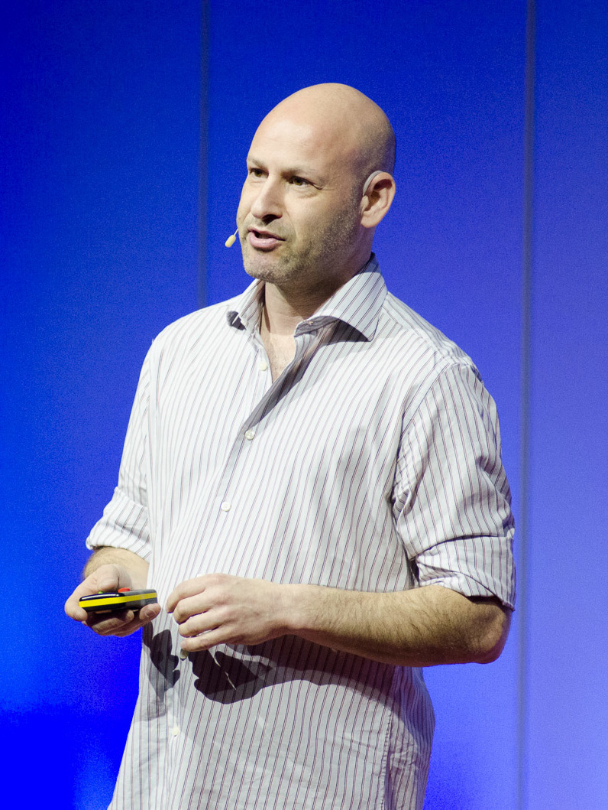

ConsenSys is a market-leading blockchain technology company.From
developer tools to enterprise solutions, ConsenSys is building Ethereum
blockchain infrastructure and applications for new economic systems that
are more open, efficient, and secure.ConsenSys is the leading Ethereum
software company. We enable developers, enterprises, and people
worldwide to build next-generation applications, launch modern financial
infrastructure, and access the decentralized web. Our product suite,
composed of Infura, Quorum, Truffle, Codefi, MetaMask, and Diligence,
serves millions of users, supports billions of blockchain-based queries
for our clients, and has handled billions of dollars in digital assets.
Ethereum is the largest programmable blockchain in the world, leading in
business adoption, developer community, and DeFi activity. On this
trusted, open source foundation, we are building the digital economy of
tomorrow.
“We have arrived at a breakthrough in how we can build trust into all of
our systems. We are at the beginning of the next revolution, the Trust
Revolution.”
Joseph Lubin
Founder of ConsenSys and Co-Founder of Ethereum
ABOUT OUR FOUNDER
Joseph Lubin

Joseph Lubin is a co-founder of Ethereum and the founder of ConsenSys, a
full-stack, global blockchain company. Lubin has established himself as a
guiding force in the fast-growing blockchain industry and a powerful
advocate of decentralized technology.
Founded in 2014, ConsenSys has cultivated a global presence, employing top
entrepreneurs, computer scientists, protocol engineers, software
developers, and experts in enterprise delivery. As one of the largest and
most foundational entities in the blockchain technology space, ConsenSys'
worldwide Mesh of people, projects and companies is building the
blockchain industry's developer tools, decentralized applications, and
solutions for enterprises and governments that determined to harness the
power of Ethereum. The organization was referred to by The New Yorker in
2018 as “the Ethereum community's most prominent and ubiquitous developer
and promoter of decentralized apps.”
Born and raised in Toronto, Lubin graduated from Princeton University with
a degree in Electrical Engineering and Computer Science. He worked in the
Princeton Robotics Lab at Tomandandy Music developing an autonomous music
composition tool and at private research firm Vision Applications Inc.
building autonomous mobile robots. As a software engineer and consultant,
Lubin worked with eMagine on the Identrus cryptographic payments and trade
finance network project and was involved in the founding and operation of
a hedge fund. He held positions as Director of the New York office of
Blacksmith Software Consulting and VP of Technology in Private Wealth
Management at Goldman Sachs. Through these posts, Lubin focused on the
intersection of cryptography, engineering, and finance.
Inspired by Satoshi Nakamoto's Bitcoin white paper and the potential of
distributed systems to “shatter the silos of power and re-balance the
information asymmetries that disadvantage so many,” Lubin delved into the
incipient blockchain community. He was a primary figure in the creation
and launch of Ethereum alongside fellow Torontonian Vitalik Buterin in
2014, and eventually moved to build an ecosystem around the nascent
technology, in part by launching ConsenSys.
“With Lubin's background in both tech and business, he quickly emerged as
a key strategist and took the title of chief operating officer of the
entity that would bring Buterin's vision to fruition,” stated Newsweek.
“After that, things moved fast.”
The subsequent rise of blockchain, cryptocurrency, and Ethereum has been
one of the most remarkable stories in tech since 2016—a bonafide global
phenomenon that resonates from hacker dens to Davos—and an entire industry
has grown around decentralized networks and their associated digital
assets.
“Bitcoin presented the broad strokes vision,” Lubin told the New York
Times in 2016. “Ethereum presented the crystallization of how to deliver
that vision.”
The Ethereum developer base, now in the hundreds of thousands, is an
ardent community building with open source ideals and interoperable
platforms in market segments ranging from supply chain to financial
markets to intellectual property. Thousands of startups around the world
are innovating new business models with Ethereum, and blockchain
experimentation is now prevalent among the world's leading
organizations—banks, central banks, governments, and tech giants alike.
ConsenSys has incubated over 50 projects, including key infrastructural
elements of the Ethereum network like Kaleido's Blockchain-as-a-Service,
MetaMask's Web3 onramp, Truffle's developer suite, PegaSys' mainnet
client, and Ethereum network essentials like Infura and Alethio. ConsenSys
also incubates platforms and applications across a wide variety of
industries, such as komgo, an international trade financing platform, and
Viant, a supply chain track and trace platform. ConsenSys has had close
association with another 50 or so projects via investment or through
services like security auditing or token launching. In 2018, Newsweek
wrote that “The growth of ConsenSys, like the growth of Ethereum itself,
has been explosive.”
ConsenSys has been a central figure in the establishment of the Enterprise
Ethereum Alliance, a global standards organization for business
applications of Ethereum technology. The EEA now has over 500 members,
including global business leaders including Accenture, CME Group,
Deloitte, Ernst&Young, Intel, banks like JPMorgan, Microsoft, Pfizer, law
firms like Schulte Roth&Zabel LLP, T-Mobile, and Wipro. The Brooklyn
Project and projects like the EU Blockchain Observatory and Forum have led
research and regulation in the United States and Europe, ensuring a more
equitable blockchain industry.
ConsenSys has also been noted for its commitment to decentralized
organization in addition to its myriad successful spinouts, projects, and
initiatives. “The company structure is inspired by Lubin's utopian
ideals,” states Newsweek. “Employees choose their own titles, and instead
of a traditional deep hierarchy, there's a flatter, agreements-based
governance structure, a decentralized system of management where power is
distributed among self-organizing teams.”
By now, it's clear that blockchain technology will embed itself deep into
the economic processes of the world. It's just a matter of when. Through
these early stages in the era of blockchain and cryptocurrency, Joe Lubin
has proven a steady hand amidst the volatility. With all roads leading to
Ethereum 2.0 and a fully mature industry of blockchains, Lubin believes
the Ethereum ecosystem has reached critical mass and velocity:
“Entrepreneurs and technologists are pouring into the ecosystem to build
out the decentralized world wide web, Web 3.0. Once you've seen the
profound implications of blockchain, you can't unsee it. Each new wave of
the hype cycle will bring larger and larger cohorts of builders and users.
For these people, there is no turning back.”